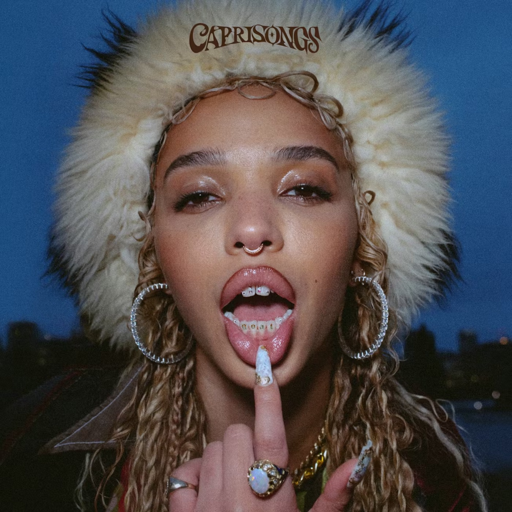
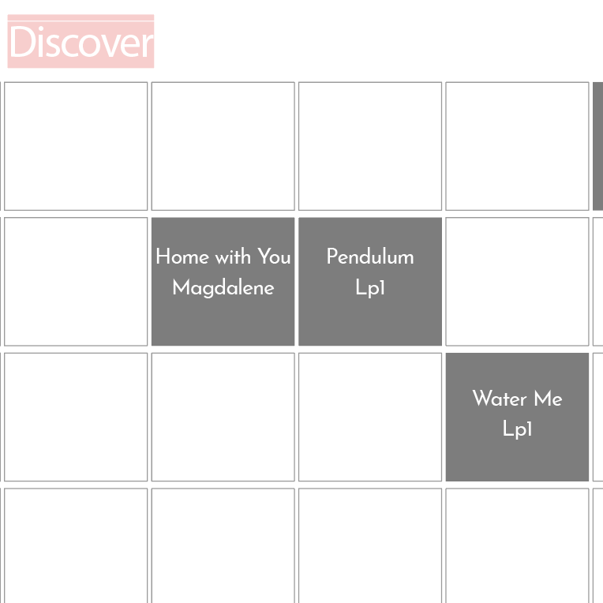
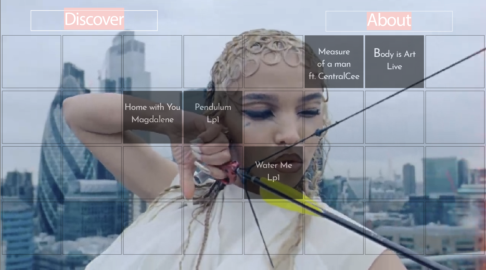

FKA twigs Interactive Discography
Spatial exploration for an artist who defies linear categorization
ROLE
UI/UX Designer, Interaction Designer, Front-End Developer
MEDIUM
Interactive web experience built in Adobe InDesign
INNOVATION
Mesh grid navigation with rollover-activated video content
FOCUS
Embodied interaction, spatial navigation, non-linear discovery
This experimental interface reimagines music discovery through spatial navigation and embodied interaction. Built as an interactive mesh grid system, the project transforms FKA twigs' discography into a tactile digital landscape where hovering becomes an act of choreography—appropriate for an artist whose work dissolves boundaries between sound, movement, and visual art.
Concept & Artist Context
Design Brief
"How do you create a navigation system for an artist whose work exists between disciplines?"
FKA twigs' practice spans music, dance, film, and performance art—traditional music platforms flatten this complexity. The challenge was to design a discovery system that honors non-linear artistic vision while remaining functionally intuitive.
"Interface as choreography; navigation as improvised performance"

Case Study: Mesh Grid Mechanics
The Problem
Traditional music interfaces prioritize search and recommendation—limiting discovery to what users already know they want.
The Solution
Mesh grid transforms entire discography into navigable space where all content exists simultaneously.
Core Mechanics
- →Nodes contain video thumbnails/previews
- →Rollover triggers animation: scale change, opacity shift, visual distortion
- →Click/tap initiates full video playback within grid or expanded view
- →Adjacent nodes suggest lateral movement rather than hierarchical drilling down

"Spatial navigation creates embodied memory—users remember where content lives, not just what it is."
Visual Identity & Aesthetic Strategy
Mesh as Metaphor
References both digital infrastructure and organic cellular structures
Wireframe Aesthetic
Exposes underlying architecture—making the invisible visible
Negative Space
Generous spacing allows content to breathe, prevents visual overwhelm
Monochromatic Base
Neutral palette ensures video content remains focal point
Animation Principles
Fluid, elastic transitions mirror twigs' movement quality
Rollover effects suggest tactility—digital skin responding to touch
Subtle easing creates sense of weight and physicality
No abrupt cuts; everything flows

User Experience Journey
Entry Point
Users encounter mesh grid—curiosity replaces instruction
Discovery Phase
Hovering reveals content previews, encouraging exploration
Engagement
Video activation transforms grid from map to destination
Navigation Memory
Spatial positioning helps users develop intuitive mental model
Repeat Interaction
Non-linear structure encourages multiple journeys through same content
Experience the Interactive Prototype
Explore the full mesh grid navigation system featuring FKA twigs' discography with rollover-activated video content.
View Live Prototype